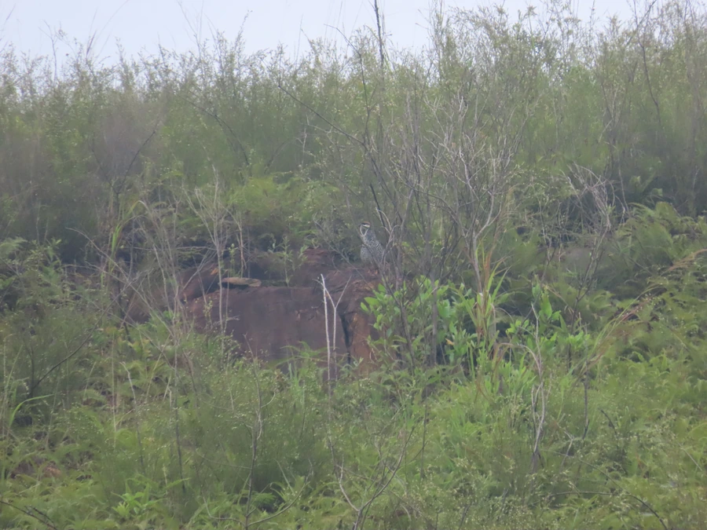

鸟类 · 动物界
鹧鸪 Francolinus pintadeanus

华南常见的雉类，上体黑底白斑，下体淡黄，脸与脚红色。雄鸟清晨反复高叫，声似“行不得也哥哥”，是诗词中的经典意象。
- 分类
- 门脊索动物门纲鸟纲目鸡形目科雉科属鹧鸪属
- 栖息环境
- 低山丘陵灌丛、草坡、疏林、茶园、果园与农田边缘，偏好干燥且有稀疏灌木的环境。
- 地理分布
- 中国华南、西南至中南半岛，包括广东、广西、福建、云南、海南等地。
- 保护级别
- IUCN 红色名录列为无危（LC）；中国列入“三有”陆生野生动物名录。
物种志
鹧鸪体长约二十八至三十四厘米，体重二百五十至三百五十克。上体黑色，密布白色斑点，形似珍珠；下体淡黄至沙褐色，胸腹部具黑色横斑。头部黑色，脸部和眼圈裸皮红色，眉纹白色；嘴黑色，脚橙红色。雌雄羽色相近，雄鸟体型略大，距更明显。飞行时双翼短圆，起飞笨拙而声响大。
它栖息于低山丘陵的灌丛、草坡、疏林、茶园与农田边缘，多在地面活动，善奔跑，取食昆虫、种子、嫩叶和浆果。繁殖期雄鸟站在土坎或石块上高声鸣叫，鸣声三音节，被民间拟作“行不得也哥哥”；巢筑于地面草丛，每窝产卵三至六枚。鹧鸪分布于中国华南、西南及东南亚，是华南丘陵常见的留鸟。由于捕捉和栖息地破碎化，野外种群有所下降，现列入“三有”名录。
形态与习性
- 体长28–34 厘米
- 体重250–350 克
- 食性昆虫、种子、嫩叶与浆果
- 繁殖地面草丛营巢，每窝 3–6 枚
- 鸣声三音节，拟声“行不得也哥哥”
- 保护级别IUCN 无危；“三有”动物
趣味知识
- 鸣声被古人拟作“行不得也哥哥”，常入诗词。
- 上体白斑密布如珍珠，故有“花鸡”之称。
- 善在地面奔跑，起飞时双翼拍打声很大。